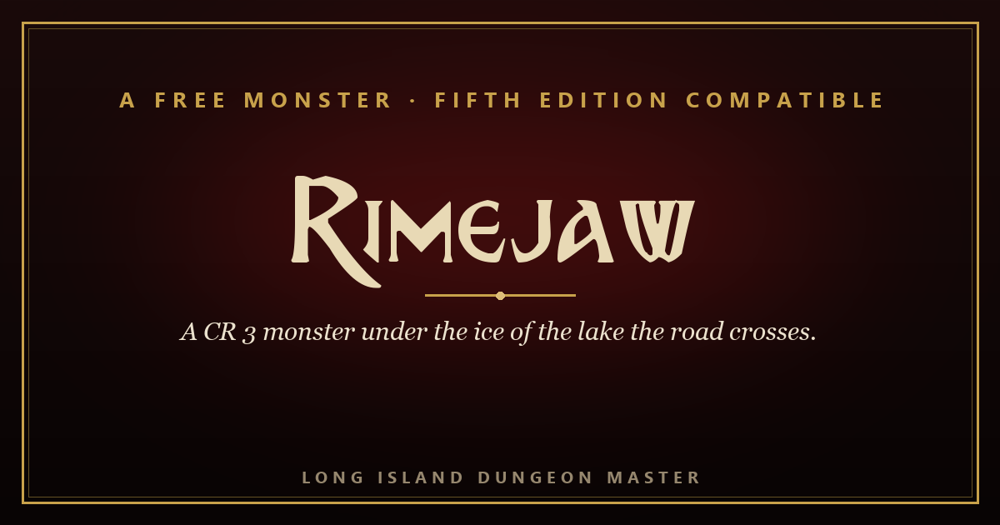

A Free Creature Keeper · Long Island Dungeon Master
A CR 3 monster that lives under the ice of the lake the road crosses. It sees you through the black ice, and it reaches you only through the thin.

One file, running in your browser. The rimejaw is already in the initiative tracker with its tactics attached, and the d12 rolls itself. Offline, no account, yours to keep.
Or take the print PDF or open the PDF in your browser firstFive pages, with the stat block whole on one page and the d12 whole on one sheet.
The road over the pass crosses the lake on the ice, because the way round is two days through drifts. There are three kinds of ice on it, and all three can be told apart from the shore: white ice, which the rimejaw cannot see through or break; black ice, which it cannot break and can see through, so it follows a walker from two feet down, keeping pace; and thin ice, grey and bare of snow in a ring over the springs, which is the only ice it can come through. When it moves, the lake rings like a struck pipe. You get the full CR 3 stat block, run through the encounter calculator for levels 3 to 5; the three kinds of ice, stated once; the water in three lines; the ruling on every tool the party reaches for, from a pole and a rope to shatter, fly, levitate, misty step and water walk; a d12 of what is in the ice; a witness who walks the route; a print-ready PDF; and a Creature Keeper that runs the whole thing from a browser tab. Free to use at your table and in your own work under CC BY 4.0.
d12, 3. A hole the width of a cart, refrozen grey, with a ring of older white ice around it.
d12, 7. A line of wolf tracks that walks out from the shore, stops, and walks back on top of itself.
d12, 9. A man’s hand, flat against the underside of the clear ice, white, the rest of him in the dark.
The free Dungeon Master companion on itch.io: your reference, your rolls and your trackers open on the screen while you play. The Creature Keeper above installs straight into it.
Get it on itch →The same Grimoire, running in this browser. Nothing to install, nothing to sign up for.
Open it →The free signup gift: hand-made tables that make any session better, yours to keep.
Grab it →The Keeper of Halcyon Light, a complete free one-shot you run from your browser. See what a whole Adventure Keeper feels like.
Open it →Long Island Dungeon Master
The monsters are mine. 30+ years of real tables. Compatible with fifth edition. Portions derived from the SRD 5.1, © Wizards of the Coast LLC, under CC-BY-4.0. Rimejaw, Skelder Water and Kester Bowyer are original © Long Island Dungeon Master, free to use at your table and in your own work under CC BY 4.0.